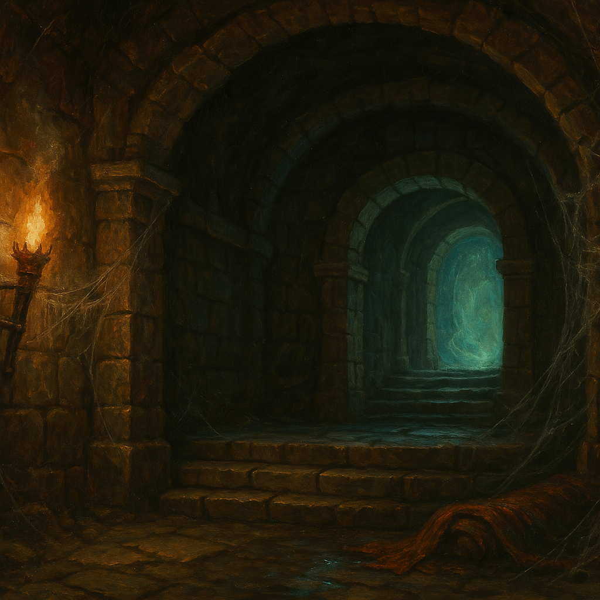

Chapter 4: We Need a Plan
The Gift from Alfenor

The Gift from Alfenor
15048.12.03
華生和 Sugalu 搜刮著監牢內的屍體，發現了剛才差點丟中 Sugalu 的飛鏢，上面似乎塗有深如黑色的顏料，很有可能是毒藥。同時，華生也在一名刺客的口袋內找到一罐看起來曾經裝過這種顏料的玻璃罐，蓋子底下有個眼睛的符號。
在 Marcus 和伊暫時回辦公室的期間，華生告訴 Sugalu 自己看見 Marcus 出現在 Bernard 事發現場的事，表示對他還是要有戒心。同時，他們討論著想和 Marcus 商借一些錢的事。
伊在 M 伯爵的辦公室，伊似乎對於剛才沒能對於這場戰鬥做出什麼貢獻感到可惜，在 M 伯爵的安慰下，伊有感覺好些。伊擔心剛剛放走的兩名刺客可能會帶來後患，但在 Marcus 的說明下，這些被送走的刺客可以幫他在 Pamela 那邊帶來一些有用的影響。最後，在伊的詢問下，Marcus 送了他一顆剛剛使用過的魔法球，表示這東西讓他研究研究，但是要注意，只能用一次而已。過去他和一名商人買了這個神奇的魔法球，用了十分滿意，因此進了以大批的貨。
伊回到大廳，聽見遠處的門口傳來敲門聲，便趕緊趕過去，打開門後發現是王國巡邏中的衛兵來關切，在伊簡單說明後，衛兵便離去了。
在華生的要求下，伊帶著華生和 Sugalu，以及剛剛一直躲在窗簾後的 Tweeter 到二樓找 Marcus。華生表示接受對於先前 Marcus 提議的去見國王這件事，但他也提議想商借一些錢，讓他們可以做好準備。Marcus 對於他們提出的 150 金，表示如果他們願意幫一個忙的話就沒問題。Marcus 提到了他的妹妹 Marianne Jens，被關押在王宮的監獄內，希望他們可以將她解救出來。在冒險者們的詢問下，得知 Marianne 曾經離開過家裡一陣子，回來時 Marcus 才得知她已成了蜘蛛神教在麥克嵩的間諜。然後有一天她就不見了，後來才得知應該是被當時的國王，巴納沃二世，關押在監獄內了。
Marcus 表示他知道監獄的位置，但裡面似乎沒有獄卒，但也沒有聽過有人逃出來過，聽說是個進得去但出不來的地方。
經過討論後，Marcus 給了華生、Sugalu、Tweeter 和伊各 60 枚金幣，讓他們在出任務前先去採買些需要的東西。同時，他承諾在救出他的妹妹後，可以給他們更多錢。
離開了 Marcus 的宅邸，伊先帶大家到了一間雜貨店。大家在雜貨店內簡單採買，而 Tweeter 發現店內似乎有魔法用品的氣息。在和老闆交涉後，店小二帶著大家來到了櫃檯後方的特別房間。房間內，有幾個玻璃櫥櫃，裡面放著看起來很特別的魔法物品。在觀賞它們以及詢問店小二價錢後，華生決定出資買下一個看起來很黑的盒子，Tweeter 在盒子上似乎看見了一個眼睛的符號，讓他想起這和月神之間似乎有點關聯。
拿出盒子後，他們發現盒子外觀在不同角度下，似乎能看見數以萬計的眼睛符號。Tweeter 試著和他的月神溝通，想得知關於這個盒子更多的信息，卻只在腦中浮現了這個眼睛的符號。詢問老闆關於這個盒子的用處後，老闆僅用了月神教的語言，說了一句「讓月神引導你」。Tweeter 和華生到了店外繼續研究它，發現盒子內雖然黑到什麼都看不清楚，卻能摸到滿滿如同黏液般的觸感，但卻不沾手。Tweeter 突發奇想，將月神的石頭放入盒子內，意外發現石頭竟然漸漸融入黏液中，然後就消失了，而黏液的量似乎有增加。
大家購買完物品後，伊決定帶大家前往武器行。轉身，大家看到了一個熟悉的身影，一名穿著新衣的半身人走在一名穿著華麗的年輕女子身邊。華生趕緊趕了過去，Paladin 終於和大家重逢。身旁的 Roline 看起來十分擔憂 Paladin 的狀況。大家折返回雜貨店內，Paladin 簡單採買了點東西，大家便繼續上路去。
武器行內，大家也做了簡單的採買，然後前往打鐵鋪去。伊帶著大家繞進小巷弄內，見到了熟悉的打鐵師傅。伊遞出了他想製作的武器的設計圖以及材料，多花了點錢，師傅便承諾可以在晚餐後來拿取他的新武器。
Sugalu 發現 Tweeter 的額頭上似乎出現了眼睛的符號，像是投影般照在上面。Paladin 表示自己剛才在購買的藥品上也有看見這個符號。Tweeter 向 Paladin 借了這個藥品，滴入一滴在盒子內，發現黏液擴散開來了，底下像是鏡面一樣，但幾秒鐘後，黏液便又收束了回去。Tweeter 發現他從 Sebano 的 Thorne 鎮長那裡拿到的手杖，和這個黑盒子似乎有些共鳴。在他抽出手杖，同時打開盒子時，他的腦中冒出了數以萬計的眼睛符號，而他額頭上的符號變得更明顯且不再暗沈。
離開了打鐵鋪，Roline 決定帶大家去吃點好料的。走回熟悉的艾德蒙餐酒館，Roline 熟門熟路的帶大家走進包廂內，並點了今日特餐。但當特餐（滿滿的各類肉品和麵包以及啤酒）上了以後，Roline 卻面露難色，詢問店員今天怎麼沒有海鮮。除了 Roline 外，大家都吃得很開心，Roline 則似乎很快就喝醉了，離開餐廳時不斷大聲抱怨著難吃，讓場面十分尷尬。
華生決定先帶 Roline 回他家去，但 Roline 已經醉到無法說出自己住在哪裡了。在伊的評斷下，大家決定還是將 Roline 帶回 Marcus 宅邸去。
在伊和 Marcus 先告知一聲後，Marcus 對於這名 Roline 似乎有些沒有表明清楚的特別想法，但也讓大家把他帶進來了。華生和伊將 Roline 先搬到二樓的貴賓室讓他躺在床上休息，其他人則在一樓客廳休息，大家約好晚餐前集合。同時，Marcus 將一顆魔法球丟給伊，要他等等餵給 Roline 吃。
伊先回到自己在宅邸的房間小睡了一下，然後組裝自己購買的零件。Sugalu 倒臥在沙發上睡覺。華生前往貴賓室看看 Roline 的狀況，同時召喚自己的魔寵。Tweeter 繼續研究黑盒子，同時也召喚他的夸塞魔。Paladin 看著大家都在忙些什麼，然後跑去和先前華生召喚的殭屍智者阿多對話，但智者阿多被後來跑過來的 Sugalu 批砍了腦袋。
華生檢查著 Roline 的身體狀況，雖然他應該只是喝醉，但華生不確定是否還有其他的風險存在。他也藉機翻了一下 Roline 的錢包，發現裡面的錢多到讓他吃驚，他便偷偷摸了幾枚白金硬幣走。
Tweeter 讓召喚出來的夸塞魔跑去 Marcus 的辦公室探索，發現他的藏書中似乎有少數幾本和蜘蛛神教有關的書，也有幾本和月神教有關的書，另他感到有點訝異。他藉由隱形的夸塞魔模仿了幾句月神教的話，Marcus 在空無一人的辦公室內聽見，似乎有點反應。於是 Tweeter 便決定親自到樓上去見見他。
敲敲門，Marcus 看見是 Tweeter，便邀了他進來。兩人針對月神進行了討論，Marcus 恭喜他開了眼，Tweeter 尚不清楚「開眼」到底可以做到什麼事，Marcus 則表示他只知道可以看到一些一般人看不到，神才能看到的東西。但同時，Marcus 也表示開眼的代價，會犧牲一名無辜的人，而這讓 Tweeter 感到十分錯愕而緊張。他隨即想到 Roline，想趕快去看看他的狀況。離開 Marcus 的辦公室前，Marcus 和他提起，不知道他清不清楚月神其實有兩名，一名是大家所知的 Phyneal，月亮之神，另一名則是「交易之神（God of Deals）」，和貿易之神 Kalinius 不同，這個交易指的是靈魂或肉體的交易。兩名月神，就像 Rugatha 的兩顆月亮一般。似乎 Marcus 也對 Paladin 當時用耳朵進行交易的這件事也略有耳聞。
感到了貴賓室，Tweeter 趕緊去檢查 Roline 的狀況，焦急的神情另華生感到詫異。一摸，Tweeter 發現 Roline 的肌膚已經成了冰冷的陶瓷，沒有了鼻息。兩人擔憂著，而 Roline 卻突然坐了起來，眼神空洞。Roline 口中喃喃說著「我得走了」，便站起了身子。華生用手抓住 Roline，趕緊讓他的魔寵擋在門前，Roline 卻輕易地閃開，推開門，向外走去。
走下一樓，從 Paladin 和 Sugalu 背後跳過了地洞，然後推開了宅邸的門，走了。當 Sugalu 跑到門口時，已不見 Roline 的身影。
對於 Roline 發生的異狀，Sugalu 感到無法理解，忿忿不平的跑到樓上 Marcus 的辦公室找他質問。其他冒險者在樓梯間，僅聽到了 Marcus 表示「如果靠錢可以收買你的話，那就這樣吧！」對於辦公室內到底發生了怎麼樣的對話，毫無頭緒。Sugalu 離開辦公室後，便離開了宅邸，不知道往哪兒去了。
了解了 Roline 發生了什麼事情，伊感到非常自責，好不容易認識了一個不同階級的「朋友」，和 M 伯爵這種從屬關係不同，而是真正的朋友，卻馬上失去她了。伊也跑去找 Marcus，表示希望他可以救 Roline，但 Marcus 要伊把工作和私人情感分清楚，現在應該以工作優先。
離開宅邸前，Tweeter 再次去拜訪 Marcus，Marcus 請 Tweeter 幫忙把一顆魔法球交給 Roline，並表示按下去就可以知道怎麼到王宮監獄去了。
伊帶著 Tweeter、華生和 Paladin 等人，出發前往王宮花園入口。在伊以 M 伯爵的名義說明下，衛兵變讓大家進到花園內了。伊以過去自己的印象，將花園底部的石門推開，帶著大家走入漆黑的通道內。
走了好一陣子，終於來到通到底端，推開石門，王宮區域在夜晚時段還是滿滿的人正在辛勤工作。
接下來伊便靠著 M 伯爵給他的魔法球，走過一條條巷弄，找到了一個看似平凡的小房子，裡面似乎有人正在活動的聲音。
透過老鼠，華生探查到裡面好像是間洗衣房，而伊魔法球內的地圖，似乎是要從洗衣房正中間火爐前的地板打開一道密門才能進入，但裡面人們活動的太過頻繁，很難偷偷進入。
大家在洗衣房門外小心討論著，意外撞見一名洗衣的女工抱著一盆洗完的衣服，走出巷弄外。大家在第二次見到有女工搬運衣服時，從背後攻擊他，將他擊暈。華生模仿成他的樣貌，換上他的衣裝，並將盆子內的衣服連同女工搬到旁邊的小巷子，讓 Paladin 窩在盆子內，他便抱著盆子走回洗衣房內，讓伊和 Tweeter 先在外面待命。
走回洗衣房內，華生馬上被一名看起來是總管的年長婦人叫著，質問他怎麼回來了，是不是又闖禍了？華生得知這名他假冒的女工名為 Ada，才剛來這裡工作一週左右，已經闖了不少或，還是靠總管姊姊的人情才得以繼續待在這裡。
華生向總管姊姊表示自己有兩名朋友也想加入工作，便把 Tweeter 和伊叫了進來。對於有人願意加入，總管姊姊覺得很棒，但不想要這件事干擾大家工作，但在華生的請託下，還是讓他帶著兩名新夥伴在左右側的工作空間給大家自我介紹了一下。
此時被放在洗衣房中間火爐前的 Paladin 已經熱到快不行了，但華生也發現了火爐前有張地毯似乎被刻意放在那裡，暗門很有可能就在地毯下。在「自我介紹」完成後，華生和兩名夥伴回到洗衣房中間，趕緊放了個黑暗的法術，將地毯掀開，拉開暗門，跳入地底下，同時 Tweeter 讓他的夸塞魔在地面上善後，將暗門拉上，並拉回地毯。地底下，Paladin 終於能逃脫悶熱的盆子。